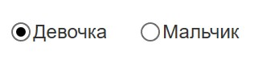
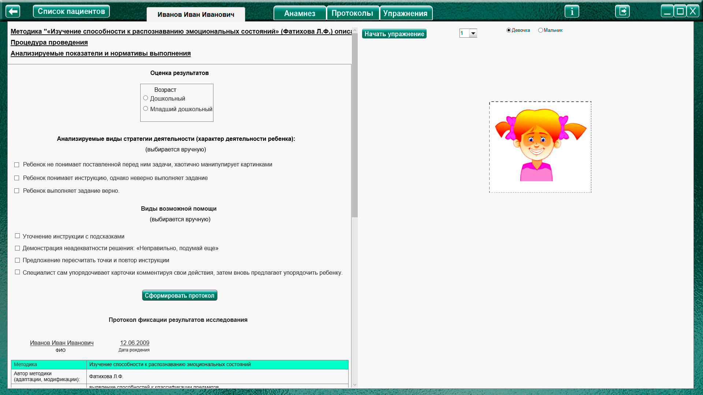
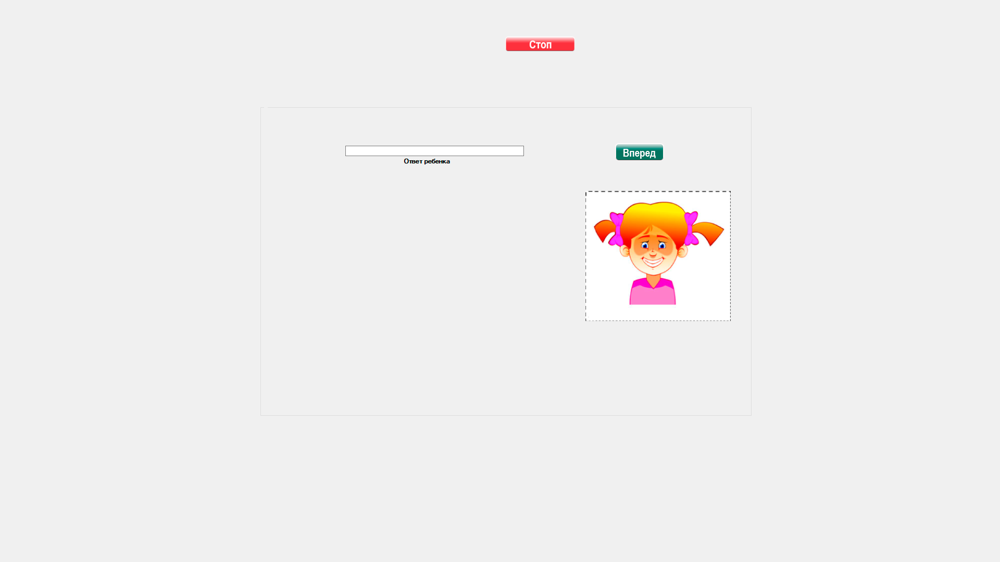
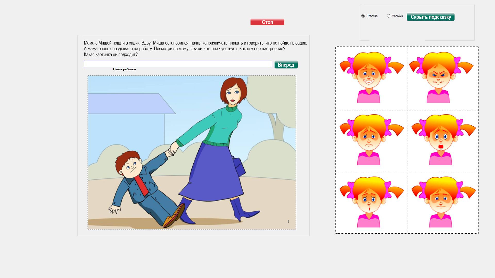

Методика «Изучение способности к распознаванию эмоциональных состояний» (Фатихова Л.Ф.)
Методика «Изучение способности к распознаванию эмоциональных состояний» (Фатихова Л.Ф.) описание
Процедура проведения.
Исследование проходит индивидуально с каждым ребенком и включает две серии. Задача, которая ставится экспериментатором в первой серии, – категоризация эмоциональных состояний на
портретных картинках. При этом ребенку последовательно показывают портретные картинки и предлагают следующую инструкцию:
«Сейчас я буду тебе показывать картинки, а ты назовешь, какое настроение у мальчика (девочки), нарисованного(ой) на картинке, какие чувства он (она) испытывает».
Ребенку показывают последовательно все 6 портретных картинок и фиксируют ответы. При этом для мальчиков показывают набор портретных картинок с изображением мальчика, а для девочек –
с изображением девочки. Этот прием, по нашему мнению, позволяет ребенку легче «вжиться» в образ той эмоции, которая изображена на портретной картинке, и позволит идентифицировать этот образ с эмоциями персонажей сюжетных картинок при выполнении заданий второй серии, т.е. создать своеобразный эталон эмоции, который будет «примеряться» к персонажам картинок.
Вторая серия представляет собой задание на использование эталона эмоции при распознавании эмоционального состояния на сюжетной картинке при чтении рассказа и нахождение данного
состояния среди портретных картинок.
Перед ребенком раскладываются портретные картинки с изображением различных эмоциональных состояний, затем предъявляется сюжетная картинка и читается соответствующий
рассказ, например:
«Мама с Мишей пошли в садик. Вдруг Миша остановился, начал капризничать, плакать и говорить, что не пойдет в садик. А мама очень опаздывает на работу. Посмотри на маму. Скажи, что она чувствует. Какое у нее настроение? Какая картинка ей подходит?».
Ребенок сравнивает сюжетную картинку с портретными и называет эмоцию, которую испытывает персонаж картинки, по отношению к которому и производилось действие распознавания эмоции или (в случае неспособности речевого опосредования) указывает портретную картинку с отражением эмоции, соответствующей переживанию персонажа на сюжетной картинке.
Таким образом ребенку предъявляется еще 11 сюжетных картинок, и результат заносится в протокол.
Рассказы к сюжетным картинкам
№ |
Рассказ |
Правильный ответ |
1 |
Мама с Мишей пошли в садик. Вдруг Миша остановился, начал капризничать, плакать и говорить, что не пойдет в садик. А мама очень опаздывает на работу. Посмотри на маму. Скажи, что она чувствует. Какое у нее настроение? Какая картинка ей подходит? |
Злость |
2 |
Мама готовит ужин. А Маша и Миша вместо того, чтобы помочь ей, стали баловаться и играть на кухне. Посмотри на маму. Какое у нее стало настроение? Скажи, что она чувствует. Какая картинка ей подходит? |
Грусть |
3 |
Мальчик и девочка сажают деревья у себя во дворе. Мальчик копает, а девочка помогает ему, держит дерево. Посмотри на детей. Какое у них настроение? Что они чувствуют? Какая картинка им подходит? |
Спокойное |
4 |
Миша и Саша построили кораблик и стали спорить, кто будет с ним играть. Миша говорит: «Это мой кораблик!», а Саша – «Нет, это мой кораблик!». Посмотри на мальчиков. Какое у них настроение? Что они чувствуют? Какая картинка им подходит? |
Злость |
5 |
Маша и Миша решили подкормить птичек. И вдруг птички заговорили с детьми на человеческом языке! Какие лица стали у детей? Что бы они почувствовали? Какая картинка им подходит? |
Удивление |
6 |
Мама с Мишей шли по улице и увидели маленького щенка. Миша стал просить маму взять его к себе домой. И вдруг мама разрешила. Посмотри на Мишу. Какое у него стало настроение? Скажи, что он чувствует. Какая картинка ему подходит? |
Радость |
7 |
Маша увидела маму на другой стороне дороги и решила перебежать на красный цвет светофора прямо перед машиной. Водитель еле успел остановиться. Посмотри на маму. Что она сейчас чувствует? Какая картинка ей подходит? |
Страх |
8 |
Дети играют в песочнице: мальчики строят замок из песка, а девочки играют с куклами. Посмотри на детей. Какое у них настроение? Что они чувствуют? Какая картинка им подходит? |
Спокойное |
9 |
Видишь, бабушка шла по дорожке, поскользнулась и упала. А в это время мимо проходили дети, увидели, что бабушка упала, и стали смеяться. Что почувствовала бабушка? Какое у нее стало настроение? Найди картинку с таким же настроением. |
Грусть |
10 |
Зайчик залез в чужой огород, чтобы поесть вкусной капусты. Только он откусил кусочек, как увидел гусеницу. Зайчик весь задрожал, ушки прижал. Посмотри на зайку. Какое у него стало настроение? Скажи, что он чувствует. Какая картинка ему подходит? |
Страх |
11 |
Дети водят хоровод вокруг елки. Скоро Дед Мороз подарит им подарки. Посмотри на детей. Какое у них настроение? Что они чувствуют? Какая картинка им подходит? |
Радость |
12 |
Маша и Саша развесили фотографии своих домашних животных. И вдруг все фотографии ожили, начали лаять и мяукать. Представь, какие лица стали у детей. Что они почувствовали? Какая картинка им подходит? |
Удивление |
Анализируемые показатели и нормативы выполнения
Задание 1
2 балла – за каждое верно определенное эмоциональное состояние;
1 балл – за приблизительное называние эмоции (например, при обозначении эмоции радости как «улыбается», эмоции грусти – «плачет» и т.д.);
0 баллов – ошибочное называние.
Задание 2
2 балла – дается за правильный ответ и за правильное соотнесение с портретной картинкой;
1 балл – за приблизительный ответ и за правильное соотнесение с портретной картинкой;
0 баллов – за неправильный ответ и (или) за неправильное соотнесение с портретной картинкой.
Индекс успешности складывается из суммы баллов, полученных при опознании эмоциональных состояний по двум сериям. Максимальная сумма баллов, таким образом, может равняться 36
(12 баллов по первой серии и 24 – по второй).
Анализ результатов
Группы детей |
Возраст |
Баллы |
Нормально развивающиеся дети. |
Дошкольный |
18-30 |
Младший школьный |
20-36 |
|
Дети с задержкой психического развития. |
Дошкольный |
7-21 |
Младший школьный |
12-23 |
|
Дети с умственной отсталостью. |
Дошкольный |
0-4 |
Младший школьный |
11-20 |
Нормально развивающиеся дети адекватно определяют и точно называют все эмоциональные состояния, как основные (радость, грусть, злость), так и более тонкие (удивление, спокойствие) и в
первой и во второй серии. Дети склонны не только указывать эмоциональные состояния персонажей сюжетных картинок, но и интерпретировать данные состояния, называя причины, вызвавшие их
и приводя примеры из собственной жизни, из художественных произведений (сказок). Дети данной группы склонны рассуждать и прогнозировать события в связи с поведением персонажей ситуации.
Таким образом, нормально развивающиеся дети показывают высокий и средний уровни развития способности к распознаванию эмоциональных состояний.
Дети с ЗПР достаточно хорошо выполняют задание первой серии, правильно определяя такие состояния, как злость, грусть, правильно или приблизительно верно называя эмоции радости
(веселый) и страха (боится). Трудности вызывает определение таких эмоциональных состояний, как удивление и спокойствие. Оба эти состояния определяются, как правило, детьми как «хорошее»,
«веселое», «доброе».
Во второй серии дети с ЗПР демонстрируют схожие результаты: правильно определяют эмоции радости, грусти, злости, ошибаются при определении состояния удивления, спокойствия, подбирая к ним картинку с изображением радости. Могут наблюдаться противоречия в ответах детей: так, называя одно состояние, которое испытывает персонаж, изображенный на картинке, ребенок подбирает портретную картинку с изображением другого состояния. При правильном назывании эмоционального состояния дети с ЗПР могут ошибаться в подборе портретной картинки и, наоборот, неправильно называя эмоциональное состояние персонажа сюжетной картинки, подбирают
соответствующую его состоянию портретную картинку. Таким образом, для детей с ЗПР характерна неточность в выполнении заданий второй серии.
Дети с умственной отсталостью могут не понимать смысла заданий (чаще всего это характерно для дошкольников). В большинстве случаев дети этой группы определяют радость и грусть,
называя эти состояния, соответственно, «хорошее» и «плохое». Определение других эмоциональных состояний является малодоступным или недоступным. Особую трудность для определения вызывают такие эмоциональные состояния, как спокойствие и удивление.
Оценка результатов
Характер деятельности ребенка:
Виды возможной помощи:
Стимулирующая помощь
Направляющая помощь:
Обучающая помощь:
Протокол фиксации результатов исследования
_________________________________ _______________
ФИО Дата рождения
Методика |
Изучение способности к распознаванию эмоциональных состояний |
||
Автор методики (адаптации, модификации) |
Фатихова Л.Ф. |
||
Цель: |
изучение способности к эмпатии как возможности воспринимать и анализировать эмоциональное состояние партнера по общению исходя из сделанных наблюдений. |
||
Дата / специалист |
|||
Результат: баллы (макс.) / вывод об уровне развития |
|||
Примечание |
|||
| Процесс выполнения диагностического задания | |||
| Задание 1 | |||
Характер деятельности ребенка |
|||
Виды помощи |
|||
Портретная картинка |
Ответ ребенка | Баллы | |
Радость |
|||
Злость |
|||
Грусть |
|||
Страх |
|||
Удивление |
|||
Спокойствие |
|||
Итоговая оценка |
|||
| Задание 2 | |||
Характер деятельности ребенка |
|||
Виды помощи |
|||
№ рассказа |
Ответ ребенка | Баллы | |
1 |
|||
2 |
|||
3 |
|||
4 |
|||
5 |
|||
6 |
|||
7 |
|||
8 |
|||
9 |
|||
10 |
|||
11 |
|||
12 |
|||
Итоговая оценка |
|||
Индекс успешности по двум сериям |
|||

Логика заполнения протокола
Имя специалиста – логин при входе в программу.
Дата –дата и время прохождения упражнения в формате дд.мм.гггг.
Результат: баллы (макс.) / - кол-во баллов дублируется из ячейки «Индекс успешности по двум сериям» (макс 36).
Итоговая оценка - сумма баллов за задание. Заполняется после формирования протокола по всем выполненным заданиям по нажатию кнопки «Подвести итог».
Индекс успешности по двум сериям – сумма баллов за все задания. Заполняется после формирования протокола по всем выполненным заданиям по нажатию кнопки «Подвести итог».
Ответы ребенка – заполняются специалистом в процессе проведения упражнения.
Остальные ячейки заполняются специалистом самостоятельно.
Описание элементов управления.
 - кнопка для показа картинок с эмоциями.
- кнопка для показа картинок с эмоциями.
 - скрывает подсказку (картинки с эмоциями).
- скрывает подсказку (картинки с эмоциями).
Меню выбора портретных картинок эмоций мальчик/девочка.

Выполнение упражнения

Задание 1
Выбрать номер задания и нажать кнопку «Начать упражнение», закрывая область оценки результата и открывая задание на весь экран.

Выбрать вариант отображения для мальчика или для девочки. Выполнить задание согласно пункту «Процедура проведения». Перемещаясь по портретным картинкам эмоциям при помощи кнопки «Вперед», открывать картинки эмоции и записывать ответ ребенка по каждой картинке в специальное поле «Ответ ребенка» (данные из этого поля автоматически сохранятся в протоколе 1 задания в ячейке «Ответ ребенка»)
По окончании задания (всего 6 картинок эмоций) нажать кнопку «Стоп», открывая поле оценки результата. Специалист при необходимости выбирает виды помощи и характер деятельности ребенка, затем по нажатию кнопки «Сформировать протокол» формируется протокол выполнения задания.
Только после формирования протокола можно приступить к выполнению следующего задания!
Задание 2
Выбрать в меню задание 2 и нажать кнопку «Начать упражнение», закрывая область оценки результата и открывая задание на весь экран.

Выполнить задание согласно пункту «Процедура проведения», перемещаясь по сюжетным картинкам (и рассказам к ним) при помощи кнопки «Вперед». Ответ ребенка записывается в поле «Ответ ребенка» (данные сохранятся в протоколе задания 2 в ячейке «Ответ ребенка» к соответствующему номеру рассказа). По окончании выполнения (всего 12 сюжетных картинок) задания нажать кнопку «Стоп», открывая поле оценки результата.
Специалист при необходимости выбирает виды помощи и характер деятельности ребенка, затем по нажатию кнопки «Сформировать протокол» формируется протокол выполнения задания.
После формирования протокола по всем выполненным заданиям, нажать кнопку «Подвести итог» под протоколом, чтобы заполнить ячейку «Итоговая оценка».